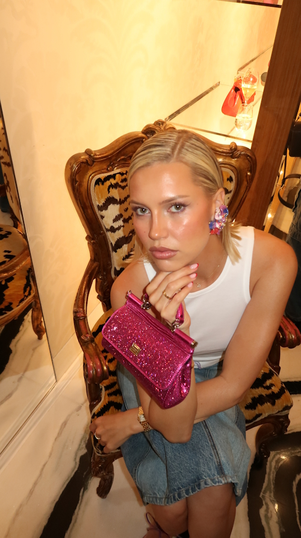
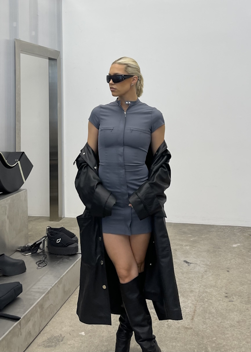
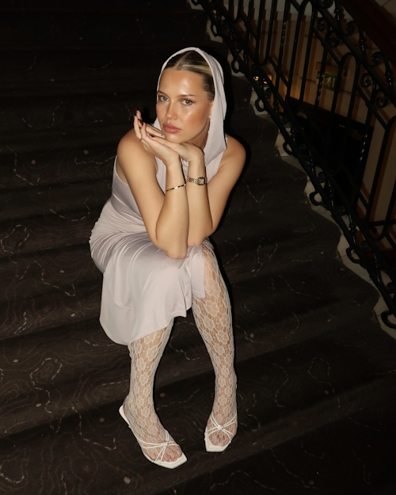

FASHION
Norwegian Born Influencer Caroline Ebo discusses the Blurring of Art and Fashion in the Age of Social Media
A conversation on her personal style, cultural influences and Instagram as an artistic practice
BY VANESA KRIZONYTE
A fashion show on the roll, Caroline Ebo will be there bringing an array of sunshine through her welcoming smile and style. She is not your typical Norwegian influencer, you will catch her in vibrant colours, sparkly Dolce & Gabbana handbags and statement jewellery. In the mix of her busy schedule from running to photoshoots to attending fashion shows, we managed to catch Caroline for a chat about her creative outputs.

Vanesa: What has drawn you to fashion and who is your fashion icon?
Caroline Ebo: Fashion came to me from a very young age. My mum and dad were always into fashion and used cameras around to do photography and videography. I think watching that, I probably got inspired and enjoy doing that as well. I’m from a very small town in Norway, like a summer town, and there is not much going on there. So when I first came to London and studied here, it opened my eyes to a whole new world, where I got inspired by everything I saw on the street and how people were dressed. I would say my fashion icon has been changing but I think for sure in recent years it's been Elsa Hosk, first because she’s Scandinavian and she’s not a typical Scandinavian and especially her new brand I think she’s killing it!
Is there anything from your Norwegian culture that you mix with your London style?
I think that Scandinavian outfits and how people dress there is a very specific type. For me, I think it is a little bit boring because I like a lot of colours and to kind of mix and match. It all depends on my daily mood.With Scandinavian style, it is very minimalistic and it is very versatile.I just feel like fashion is so much more. I do have Scandinavian pieces in my wardrobe but more colourful stuff and edgy pieces.
What is your favourite fashion show that you have attended?
They are all so different. For me, it’s not only about the fashion show. I love the visual part, the venue, and the music they put together for it. For example, last year I went to the Jil Sander show. It was very Y2K with blue lights and mysterious, like a Gen Z vibe and futuristic. Now I feel we become more into a neutral, minimalistic style again. My favourite for this season was Holzweiler not only because they are a Norwegian brand, but I think they just smashed it in their last collection.They had it outside and it was raining. So it just brought a unique feeling. It’s outside where no one else has a show and everyone has their umbrellas. It’s a moment that you won’t forget more than just having a usual runway. Bird sounds around the speakers, it was just magical.
Do you think architecture is an important play when it comes to fashion shows?
Minimalism can be beautiful in so many ways. But I think architecture is just an amazing way to attract people to take photos. I mean at the end of the day, what fashion shows want is for people to take photos and videos.
Do you think influencers are changing the fashion sphere?
I think it was easier to identify your personal style before Instagram because now I feel like unintentionally you get influenced by every style and person.
What makes an Instagram post for you?
Caroline Ebo: I look at my Instagram as my portfolio and a way for me to express my creativity. I can combine creativity in photography and play around with all different film cameras, filters or edits and combine that with collaborations and working with brands that I love.
Vanesa: I agree, so much creativity goes into an Instagram post. As an art historian, I have covered so many different art periods and I may be wrong saying this but we had Impressionism and things like that, now I think the practice of creating an Instagram post is some sort of art technique and a new art movement. I hope that in the future when we teach categories of art, there will be a category called Instagram.
I think every person on Instagram or at least so many people that I follow, how they do their layouts on their feed I think all of that is art. There is so much effort, time and planning that goes into every single Instagram post. I think people who don’t work with it don’t understand and they can’t relate.
We have always seen art and fashion being blurred together in history but now I feel more than ever fashion has been blended into art spaces. Take Gucci and 180 Studios, they have done an art exhibition.What is your opinion on blurring the boundaries between art and fashion? Do you think it is helping to open doors?
Caroline Ebo: I feel like fashion goes under art. As you mentioned with Gucci and Cosmos, I went there Saturday and I think it is just such an amazing way of getting a dig deep into the history of it but also the visual parts. It is a clever way of doing it because it is going to get more marketing. The same way it was with Yayoi Kusama, they had these massive installations that were hanging in Paris and London. I think everyone was just looking at that and wanted to take photos of it. I don’t see a reason why it wouldn’t be amazing just to combine the two of them because who doesn’t want a cool unique fashion piece? It’s a free little exhibition. I love the combination of the two.
Is this not a commercialisation of the arts?
I think it has opened up my eyes to new artists because they are
collaborating with fashion brands. I think it's a new way for artists
to do art and to get out of their comfort zone, thinking outside the
box and putting their art on different fashion pieces and having
people walking around with their pieces.
I agree the white cube gallery can be quite intimidating sometimes. I think places like Instagram and fashion help to take art out of the institutions which is important for the future of art.
Like a walking exhibition.
Exactly. It’s a new way to showcase art.
I also feel like now I wouldn’t be the typical person to go to a
gallery. I mean I can see beauty in the pieces that are hanging on the
wall but I have some sort of ADHD and don’t have patience. I can’t
walk around there and stand there and analyse a photo for me, I need
something more. So I feel like for people that are not necessarily
born and raised dying for art I think this is a better case of
showcasing and introducing an artist.
This is exactly why we need to blur fashion and art!
What are your fashion predictions for 2024?
I think definitely some of the fashion styles that have been going on in 2023 or the last couple of months will go into 2024. For example, tall socks in all different shapes and forms like tight socks, tennis socks and grey wool socks to have them knee high with ballerinas. That came very late summer and now it's going into fall and I feel like people are not done with it yet, so it will go into 2024. I think mini shorts in Miu Miu style, puffer blazers, jackets and big statement jewellery. This is all necessary to have in your wardrobe if you want to follow the trends.
Caroline Ebo has shown us that there are no rules in fashion. We should not be confined to a style or aesthetic because there is nothing wrong with mixing pieces. The essence of art is found in the power of seeing creativity in any expression. If we pause and value the creative gestures that go into the making of an Instagram post we can truly discover that art is around us and in our reach.
This interview for this story was conducted on 23, Oct 2023.With
gratitude to Caroline Ebo.
Link to Caroline Ebo’s Instagram:
https://www.instagram.com/carolineebo/?hl=en-gb